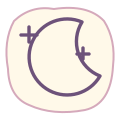

Aller au contenu
Entre les lignes
.
Accueil
Genres
Lecture
Chercher un livre
Critiques
Mon espace
Accueil
/
Genres
/
Spiritualités et religions
Spiritualités et religions
Quelques chemins vers le sens.

Religions
Spiritualités
Mythes
Ésotérisme
← Les six univers

 Religions
Religions Mythes
Mythes Ésotérisme
Ésotérisme